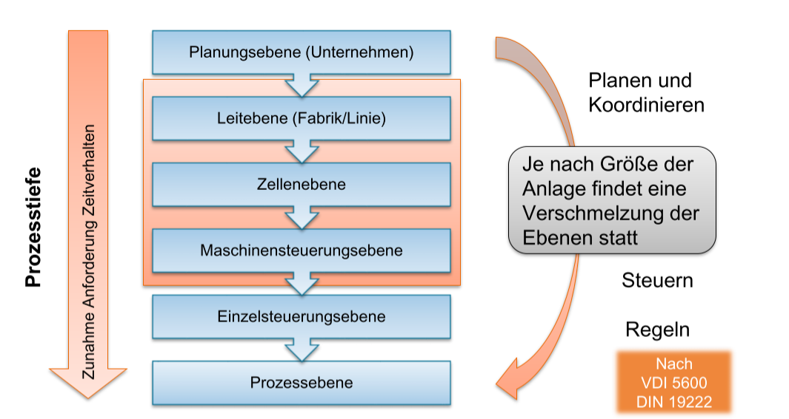

Planung von Robotersystemen - Vorlesungszusammenfassung
Stand: WS 2023/24. Sourcedateien auf GitHub. Letzter Export: 28.02.2024 um 14:52 Uhr. Stand: Alle Kapitel zusammengefasst. c Alexander Kraus, 2024
0.1 Lernziele
- Einfhrung in Planung einer Industrieroboterzelle als komplexes Automatisierungssystem
- berblick ber die wesentlichen Baugruppen und Aufbau von Industrierobotersystemen
- berblick ber Roboter sowie deren Einsatzfelder
- End-Effektoren
- Steuerungen
- Phasen der Planung von Robotersystemen
- Konzeption der Anlage
- Sicherheit von Robotern
- Programmierung von Robotern
- Inbetriebnahme und Abnahme
1.0 Einfhrung
Verwendung von Robotern durch die Jahrzehnte
| Jahr |
Verwendung |
| 1973 |
Handling |
| 1980 |
Assembly |
| 1990 |
Service Robotics (Care-O-Bot) |
| 2000 |
Image Processing Bin Picking |
| 2010 |
Industry 4.0 ROS |
| 2015 |
Artificial Intelligence Deep Grasping |
| 2020 |
Automation of Automation |
| 2030 |
Cognitive Robotics |
Entwicklungen
- Treibende Kraft: Fachkrftemangel (auch in DE und EU)
- Alterung der Bevlkerung
- Fehlende Pflegekrfte
- Komplexitt der Aufgaben (Unkraut jten, Schweien, ...)
- Zahl der neu installierten Roboter steigt (2022: 553k), besonders in China (ber die Hlfte)
- Zuwachs hauptschlich in den Bereichen
- Unterhaltung (v.a. Gastronomie) (+125%)
- Transport und Logistik (+44%)
- Landwirtschaft (+18%)
- Weite Verbreitung bereits in Automotive, Elektronik, Metall, Chemie, Lebensmittel
- Mrkte: China, Korea, Japan, USA, Deutschland
- Wachstum 8-12% p.a. in der letzten Dekade
Definition eines Roboters
- Nach ISO 8373: Ein Roboter ist ein programmierbarer Manipulator mit drei oder mehr Achsen fr industrielle Anwendungen.
- Roboter erzeugen automatisch eine durch ein Programm beschriebene Bewegung, so dass sich einmal festgelegte Ablufe ohne Personaleinsatz reproduzieren lassen.
- Der Roboter ist eine universell einsetzbare Maschine, die fr verschiedene Prozesse verwendet werden kann.
Begriffe

| Kriterium |
Industrieroboter |
|
|
Arm-Module |
Kleinroboter |
|
| Kinematik |
Horizontaler Knickarm |
Portalroboter |
Vertikaler Knickarm |
Gelenkmodule |
Leichtbauroboter |
Sicherer Roboter |
| a.k.a |
SCARA |
"auf Schienen" |
KUKA |
modular |
COBOT |
kollaborativ |
| max Traglast [kg] |
10 |
50-500 |
10-200 |
~10 |
7 |
4 |
| DOF |
4-5 |
3-6 |
5-6/6 |
2-7 |
7 |
6 |
| Wiederholgenauigkeit |
hoch |
mittel |
hoch |
mittel |
mittel |
hoch |
| Sensorfhrung |
|
|
|
|
|
|
| Kosten [k] |
25 |
50-100 |
30-60 |
5/DOF |
60 |
50 |
Roboterzelle
- Typische Roboter-Stckkosten: 50.000 (einzeln)
- Systemkosten: 4-5-facher Roboterpreis
Automatisierung der Automatisierung
- Roboterinvest: 25-30% des Robotersystems
- Personalkosten: ~40% des Robotersystems
- Skaleneffekte werden durch Individualisierung (I4.0 Unikate) aufgewogen
- Komplexe Automation ist zu 80% KVP / brown field
- Viele manuelle (Experten-)Prozesse beim Umrsten
Automatisierung der Automatisierung
- Auslastungsoptimierte Matrixproduktion (hhere Auslastung, weniger Umrsten)
- Automatisierte Layoutvorschlge (Fabrikhalle, Roboterzelle)
- Automatisierte Risikobeurteilung (Sicherheit)
- Autonome Verkettung mit Flurtransportsysteme (FTS)
- Selbstkonfigurierendes Bin Picking (Greifer, Kamera, Roboter)
- Selbstoptimierung Prozessparameter (z.B. Schweiparameter, Schwingungsdmpfung)
Wirtschaftlichkeit
Generell lohnt sich ein Industrieroboter, wenn die Stckkosten gering sind und die Stckzahlen hoch sind. Whrend die Pro-Stck-Kosten einer Transferlinie (vgl. Frderband) linear abnehmen bei steigender Stckzahl, verhlt sich das beim Roboter komplexer: Bei geringeren Stckkosten als am manuellen Arbeitsplatz und bei geringeren Stckzahlen als bei der Transferlinie lohnt sich der Roboter. Durch die Reduktion der Anschaffungskosten und die Erhhung der Flexibilitt wird dieser Punkt immer frher erreicht.
Argumente fr eine neue Roboteranwendung
- Nutzung durch Nicht-Experten mglich
- Flexibilitt und einfache Konfiguration
- Verbesserte Produktion
- Hohe Investitionsrendite
- Schnelle Amortisation
- Verbindung zum Zulieferer
Grnde fr Nicht-Investition
- Zu kleine Losgren fr die Automatisierung
- Keine automatisierungsgerechten Prozesse
- Automatisierung zu teuer
- Kein geeignetes Personal zur Nutzung von IR
- IR zu gro, zu unflexibel
- Programmierung zu aufwandig
- Sonstige Vorbehalte gegen IN-Einsatz
- Schlechte IR-Erfahrungen bekannter Firmen
Wann ist der Einsatz von Robotern sinnvoll?
| Anwendungsaspekt |
Zustand |
| Stckzahl |
hoch |
| Marktstabilitt |
hoch |
| Notwendiger Entwicklungsaufwand |
gering |
| Personalmarkt |
angespannt |
| Erfahrung mit automatisierten Systemen |
hoch |
| Ergonomie |
niedrig |
| Qualittsanforderungen |
hoch |
| Schichtmodell |
24/7 |
Herausforderungen und Unsicherheiten
- Toleranzen im Werkstck und im Prozess knnen durch Sensorik ausgeglichen werden.
- Marktvolatilitt kann durch Wandlungsfhigkeit ausgeglichen werden.
- Datenvollstndigkeit kann durch I4.0: Datenintegration ausgeglichen werden.
Beispiele moderner Anwendungen
- Vernetzte Flurtransportsysteme statt der Produktion am "Flieband"
- Programmierung durch Vorfhrung (z.B. Schweien)
- Flexibilit von mobilen Robotern beim Griff in die Kiste
- Sensorgefhrtes Schweien
2.1 berblick und Industrieroboter
Roboterkinematiken
| Kinematik |
Serielle Roboter |
|
|
Parallele und andere Roboter |
| Bauform |
Knickarm |
SCARA |
Portal |
Delta, Seilroboter |
| Marktanteil |
66% |
19% |
10 % |
1% |
| Vorteile |
Zugnglichkeit, Beweglichkeit, Traglast |
|
Sehr groe Reichweite und Nutzlast |
Hohe Steifigkeit, Genauikeit, Dynamik |
| Nachteile |
Mige abs. Genauigkeit |
eingeschrnkte Beweglichkeit, kleiner Arbeitsraum, kleine Traglast |
|
|
| Typische Prozesse |
Schweien, Kleben, handling |
Montage, Pick&Place |
Pick&Place, Regalbedienung, Kommissionierung |
Pick&Place, Sonderaufgaben |
| DOF |
5-6 |
3-4 |
3 |
3-6 |
| Form des Arbeitsraums |
Kugel |
Zylinder |
Quader |
Komplex |
| Radius des Arbeitsraums |
0.5-3m |
0.5-1m |
0.1-100m |
0.1-10m |
| Traglast [kg] |
5-1000 |
0.5-5 |
0.5-X000 |
0.5-X000 |
| Dynamik |
mittlere Geschw. und Beschl. |
sehr groe Geschw. und Beschl. |
je kleiner, desto schneller |
sehr groe Geschw. und Beschl. |
Einsatzbereiche
- Handling (44%): Materialtransport, Palettieren, Entpalettieren, Verpacken, Sortieren
- Welding (19%): Punktschweien, Lichtbogenschweien, Laserstrahlschweien
- Assembly (12%): Bauteilmontage, Endmontage, Schrauben, Nieten
- Clean Room (6%): Reinraum, Lebensmittel, Pharma
- Machining (2%): Frsen, Bohren, Schleifen
- Dispensing (2%): Kleben, Dichten, Lackieren
Steuerungen
Die Steuerung besteht aus:
- Energieversorgung
- Motorcontroller der Achsen
- Untergeordnete Steuerungen der Sensoren und Aktoren
- Die Robotersteuerung wird in der Regel vom Roboterhersteller bereitgestellt und erfolgt in einer einfachen, fr den jeweiligen Hersteller spezifischen Programmiersprache.
- Steuerungen bieten in der Regel Schnittstellen zur Integration weiterer Sensoren und Aktoren und SPS an.
- Technologiepakete fr spezielle Anwendungen (z.B. Schweien, Lackieren) sind verfgbar.
Leistungsdaten und Eigenschaften von Robotern
- Freiheitsgrade: Anzahl der unabhngigen Bewegungsmglichkeiten des Roboters. Knnen linear oder rotatorisch sein.
- Singularitten: Punkte im Arbeitsraum, an denen der Roboter seine Beweglichkeit verliert, z.B. wenn zwei Gelenke in einer Linie liegen.
- Arbeitsraum und Begrenzungen: Der Bereich, in dem der Roboter seine Aufgaben ausfhren kann, und eventuelle Einschrnkungen.
- Dynamik: Die Fhigkeit des Roboters, sich schnell und przise zu bewegen.
- Traglast: Maximales Gewicht, das der Roboter tragen kann, an jedem Punkt im Arbeitsraum, wenn es direkt am Flansch befestigt ist.
- Genauigkeit: Ma fr die Przision, mit der der Roboter seine Aufgaben ausfhrt.
- Kollisionen: Situationen, in denen der Roboter mit anderen Objekten oder Hindernissen kollidieren kann.
- Steifigkeit: Reversible Verformung des Roboters unter Last.
- Kinematische Transformation: Umrechnung zwischen verschiedenen Koordinatensystemen des Roboters, speziell zwischen Gelenk- und Arbeitsraumkoordinaten.
- Kosten: Gesamtkosten fr den Kauf, die Installation und den Betrieb des Roboters.
- Wiederholgenauigkeit gibt an, wie genau eine Pose innerhalb von vielen
Zyklen erreicht werden kann. Bei vielen Industrieroboter bis zu 0.05 mm.
- Absolutgenauigkeit gibt an, wie genau die Raumkoordinaten bezogen
auf das Basissystem des Roboters erreicht werden; hier sind Industrieroboter verleichsweise ungenau.
- Bahngenauigkeit gibt die Abweichung von der programmierten Bahn an.
- Die Genauigkeit ndert sich unter wechselnder Last aufgrund der relativ
geringen Steifigkeit.
- Robotergenauigkeit kann nicht pauschal durch eine einzige Kenngre
beschrieben werden.
2.2 Neuartige Robotersysteme
- Roboter lohnen sich nicht fr zu geringe Stckzahlen
- je nach Schichtmodell amortisiert sich ein Roboter schneller oder langsamer
- Man unterscheidet zwischen Robotern in Groserienferigung (low mix, high volume) und in Kleinserienfertigung (high mix, low volume). Bei Kleinserienfertigung ist die Automatisierung schwieriger, da die Anlagen hufig umgerstet werden mssen.
Einflsse auf die Kosten im Leben einer Anlage
- Investitionskosten: Kosten fr die Anschaffung der Anlage
- Anlaufkosten: Kosten fr die Inbetriebnahme der Anlage
- Variable Kosten: nderungen, welche die Produktion beeinflussen
- Rekonfigurationskosten: Kosten fr die Anpassung der Anlage aufgrund von Produktnderungen
- Obsoleszenzrisiko: Risiko, dass die Anlage veraltet und nicht mehr wirtschaftlich betrieben werden kann
Drei Probleme bei der Rekonfiguration von Robotersystemen
- Sicherheitskonzept muss angepasst werden kollaborative Roboter, gnstigere Roboter
- Endeffektor muss angepasst werden universelle Endeffektoren
- Programmierung muss angepasst werden offline Programmierung oder "no code"/"low code" robotics (sensor-basierte Programmierung, Trace-Pen)
Kollaborative Roboter
- Diversifikation der Produktionsbedingungen erfordert flexiblere Automatisierungslsungen, insbesondere bei kleinen Losgren
- Cobots sind einfach zu programmieren (z.B. durch App Store fr Roboterapplikationen) und erfordern oft weniger Sicherheitstechnik
- Cobots mit hoher Traglast oder hoher Geschwindigkeit sind wenig sinnvoll, da die Energie des bewegten Objekts dann gefhrlicher ist als der Roboter (1/2 mv).
- z.B. Schwei-Cobots haben sich erfolgreich am Markt etabliert
- Teure und schwer programmierbare Systeme setzen sich nicht durch
- Trend: Externe Peripherie (Achsen, Schweiquelle, etc.) kann direkt vom teach pendant des Roboters durch zustzlich installierbare Apps- angesteuert werden
- Trend: "no-code robotics" mig erfolgreich bis dato
2.3 Parallele Roboter und Seilroboter
Eigenschaften
- Leichtbau durch optimale Belastung: Statt Biegung/Torsion nur Zug/Druck.
- Geringe Masse, hohe Dynamik
- Kleinerer Arbeitsraum aber groe Traglast
- Parallele Roboter sind steifer und genauer als serielle Roboter
- Die Kinematik ist komplexer, da die Position von mehreren Gelenken gleichzeitig abhngt.
Bauarten und Antriebe
| Antriebsart |
Drehgelenk |
Schubgelenk |
Linearschlitten |
Seilwinde |
| Bauart |
Delta-Roboter |
Stewart-Plattform |
Hexaglide |
Seilroboter |
| Beschreibung |
3-4 Beine mit "Kniegelenken" |
Plattform auf 6 Beinen |
wie Delta-3D-Drucker |
Ein Seil in jede Ecke des Raums |
| Steuerungstechnik |
elektrischer Antrieb mit groer bersetzung |
elektrischer oder hydraulischer Antrieb |
Antrieb ber Lineardirektantrieb der Kugelgewindetrieb, Stab rein passiv |
Elektrischer Antrieb, einfache Umsetzung mit Standardkomponenten |
| Eigenschaften |
rumlich/flchig paralleler Roboter mit 3-4 Beinen + opt. Zusatzachse |
vollbewegliche Plattform |
3/6 Linearantriebe auf 3 Schienen |
TCP hngt an 4/8 Seilen, die die Position klar bestimmen |
| Vorteile |
hohe Dynamik, Struktur ist passiv |
hohe Steifigkeit, Nutzlast und Genauigkeit, aber beschrnkte Rotation |
geringe Emissionen im Bauraum |
Simpler Maschinenbau, Krantechnik aufrstbar |
| Branchen |
Lebensmittel, Pharma, Elektronik |
hochbelastete oder hochgenaue Aufgaben, Bewegungssimulatoren |
Handling |
Handling, SpiderCam, Hochregallager |
Entwicklung paralleler Roboter
Anforderungen aus Applikation
- Translatorischer Arbeitsraum
- Rotatorischer Arbeitsraum
- Bauraum und Strkonturen
- Freiheitsgrade
- Traglast
- Dynamik
Relevante Kriterien fr die Roboterauslegung
- Eigenkollisionen
- Singularitten
- Hub der Aktoren
- Antriebsdimensionierung
- Seile unter Spannung
Steuerungstechnik
- Benutzerspezifische kinematische Transformationen
- Echtzeitfhigkeit
Ausblick
- Leistungssteigerung zu erwarten
- Dynamik
- Arbeitsraumgre
- Genauigkeit
- Leistungsfhige Steuerungstechnik ermglicht den Betrieb komplexer Kinematiken
- Energie- und Ressourceneffizienz
3.1 Greifer, Werkzeuge, Messmittel
Endeffektor = Funktionseinheit eines Robotersystems
- Der Prozess bestimmt die Auswahl des Endeffektors
- ein Prozess ist entweder werkzeuggefhrt (z.B. Schweien) oder werkstckgefhrt (z.B. Montage, Handhabung)
- Bei Werkstckfhrung ist der Endeffektor ein Greifer (oder Spannmittel)
- Das Wirkelement erfllt die Hauptfunktion des Endeffektors, es bewirkt den Prozess. Das sind Greifer, Werkzeuge, Mess- und Prfmittel
- Das Zubehr erfllt eine Hilfsfunktion, es untersttzt den Prozess. Hierzu gehren Wechselsysteme, Ausgleichssysteme, Messsysteme.
- Die Peripherie ist die Umgebung des Roboters, sie ermglicht den Prozess. Hierzu gehren Kabelschutz, Wechselstationen, Reinigungssysteme. Sie sind keine Bestandteile des Endeffektors.
- Gre, Kosten, Gewicht und Komplexitt variieren bis zum Faktor 1000.
Greifer
- Es wirken statische, dynamische und prozessbedingte Krfte auf den Greifer
- Es gibt viele unterschiedliche Greiferarten, die sich in der Art des Greifens, der Anzahl der Greifpunkte und der Art der Aktuierung unterscheiden
- Greifprinzipien: Klemmgreifer, Sauggreifer, Magnetgreifer, Nadelgreifer, Aufwlzgreifer, Ultraschall/Bernoulli-Greifer
- Flexible Greifer haben unterschiedliche Greifbacken an einem Finger oder wechselbare Finger oder knnen sich (aktiv oder passiv) verformen
- Die Bereitstellung der zu greifenden Teile ist ein wichtiger Bestandteil der Greiferwahl/-konstruktion
- Die Greifplanung kann einerseits vordefiniert sein, andererseits kann sie auch adaptiv gelst werden (Automatisierung der Automatisierung)
- Griffpositionen knnen manuell oder automatisch am Bauteil bestimmt werden oder ohne Modell der Bauteil(lage) bestimmt werden. Greifstrategien hngen von den jeweiligen Greifprinzipien ab.
Werkzeuge, Mess- und Prfmittel
- Roboterwerkzeuge basieren meist auf Handwerkzeugen (Schweipistole) oder Maschinenwerkzeugen (Frsspindel), sie knnen aber auch speziell fr den Roboter entwickelt werden (z.B. Wickeln von Sattelspulen)
- Zustzliche Achsen und Sensoren ermglichen eine Prozessregelung
| Arbeitsschritt |
Werkzeug |
| Schweien |
Schweipistole, Schweizange, Schweilaser |
| Bearbeiten |
Frsspindel, Entgratspindel, Schleifwerkzeug, Strahlpistole |
| Beschichten, Kleben |
Lackierpistole, Klebepistole, Spritzpistole |
| Messen, Prfen |
Laserkamera, Ultraschall, Rntgen |
Zubehr
| Funktion |
Zweck |
| Wechseln |
Austauschen von Effektoren fr unterschiedliche Prozesse |
| Schtzen |
Durch Auslenken bei Kollisionen/Notabschaltung |
| Ausgleichen |
Kompensieren von Toleranzen und Verformungen |
| Messen |
Erfassen von Prozessgren (Krfte, Momente) |
| Durchfhren |
Elektrik, Pneumatik, Hydraulik, Datenbertragung |
Peripherie
- Die Peripherie ermglicht den Betrieb des Endeffektors
- Kabel und Schluche
- mssen schleppkettentauglich bzw. robotertauglich sein
- sollen in Kabelschutzschluchen oder Schleppketten gefhrt werden
- Sensor- und Aktorverteiler reduzieren die Kabelanzahl und erleichtern Inbetriebnahme, Wartung, Reparatur
Fazit
- Die Entwicklung oder Auswahl von Greifern und Werkzeugen unterliegt vielen Einflussfaktoren und ist daher anwendungsspezifisch
- Einfache Aufgaben:
- es existieren Komponenten und Bauksten
- immer ist mindestens die Auswahl und Integration notwendig
- Komplexere Aufgaben:
- Oft Sonderanfertigung oder komplette Neuentwicklung Greifer und Werkzeuge sind Anpass- oder Sonderkonstruktionen
3.2 Steuerungstechnik
Grundlagen der Steuerungstechnik
Ein technischer Prozess ist die Umformung und/oder der Transport von Materialien, Energie und/oder Information. Beispiele sind Fertigung von Teilen oder die Montage von Produkten.
Eine Automatisierungseinrichtung hat das Ziel, die Arbeit des Menschen im operativen Bereich zu erleichtern. Die Herausforderung ist prozesssicheres Einwirken des Nutzers durch Steuerungstechnik. Automatisierungsobjekte sind z.B. Roboter, Automaten, Fertigungssysteme und Werkzeugmaschinen.
Der Mensch/Nutzer hat die Aufgabe, die Automatisierungseinrichtung zu lenken und zu beobachten. Er hat Zugriff auf Fhrungsgren zur Beeinflussung der Anlage.
Abgrenzung von Steuerung und Regelung
- Steuern beschreibt den Vorgang zur Beeinflussung von Ausgangsgren eines Systems durch Einstellen von Eingangsgren
- Regeln beschreibt den Vorgang bei dem fortlaufend eine Regelgre erfasst und mit einer Fhrungsgre verglichen wird (Regelabweichung), so dass die Regelgre der Fhrungsgre nachfolgt
- Vergleich:
- Geschlossener Wirkungskreis durch Rckkopplung der Regelgre
- Stndiger Vergleich von Soll- und Istwert des geschlossenen Wirkungskreises ermglicht die Reduzierung von Strgren
Organisation und Hierarchie einer Steuerung

Automatierungspyramide:
- ERP: Enterprise Resource Planning (Planungsebene)
- MES: Manufacturing Execution System (Betriebsleitebene)
- SCADA: Supervisory Control and Data Acquisition (Prozessleitebene)
- PLC: Programmable Logic Controller (Steuerungsebene/SPS)
- Bus: Feldbus (Feldgerteebene)
Leitebene / Zellenebene / Maschinensteuerungsebene:
- Leitebene: Lenken, Zusammenfassen, Verwalten
- Programmverwaltung, Systemabbildung, Aufbereiten von Betriebsdaten
- Einbeziehung des Nutzers zur Lenkung und Organisation des Prozesses
- Zellenebene: Koordinieren und Verteilen
- Programmverteilung, Verwaltung von Werkzeug- und Werkstckdaten, Steuerdatengenerierung fr Werkstck- und Werkzeugfluss in der Zelle, Auswerten von Messdaten und ggf. Beeinflussung
- Maschinensteuerungsebene: Programmieren und Verarbeiten
- Handeingabe, Auswahl der Betriebsarten, Erzeugung der Achsbewegung, berwachungs- und Diagnosefunktionen
Maschinensteuerung eines Roboters
- Anforderungen der Echtzeitdatenverarbeitung
- Rechtzeitigkeit Einhaltung von Zykluszeit und Abtastzeitpunkt
- Gleichzeitigkeit Abarbeitung zeitlich paralleler Aufgabe
- Verfgbarkeit Unterbrechungsfreie Betriebsbereitschaft
- Umsetzung:
- Feldbusse fr die Kommunikation
- Echtzeiterweiterung im Rechnerteil (z.B. Kuka: vxWorks)
- Aufteilung des Steuerungssoftware in zyklische Tasks
Hauptfunktionen
-
Die Ablaufsteuerung bildet den fr den Anwender wichtigsten Teil der Steuerung
-
Die Programmiersprache ist herstellerspezifisch; die wesentlichen Funktionen sind allerdings vergleichbar
-
In einem Programm werden Bewegungen des Roboters als Sequenzen von Einzelbewegungen hinterlegt:
- Punkt-zu-Punkt (PTP)
- Lineare Bewegung
- Kurven (Kreise, Splines)
-
Weiterhin sind einfache Strukturierungen mglich
- Einfache Flusskontrolle (if-then-else) sowie Schleifen
- Unterprogramme
- Einfache Variablen
- ...
-
Maschinensteuerung beinhaltet Teilsysteme mit offener oder geschlossener Wirkungskette
-
Steuerungstypen
- Die speicherprogrammierbare Steuerung (SPS) verarbeitet zyklisch Eingangs- signale und bestimmt anhand interner Zustnde und einer Logik die Ausgangssignale
- Die Robotersteuerung (RC) dient als Programmsteuerung, zur Ausfhrung von Bewegungen und zur Steuerung externer Gerte
- Die numerische Steuerung (NC) ist eine Programmsteuerung, in der Fertigungsschritte werkstckorientiert interpretiert und Bewegungen ausgefhrt werden
Adaptive und Sensor-Steuerung
- Sinn und Zweck:
- Kompensation von Strungen, die auf der Gelenkebene nicht erfasst werden (z.B. Durchbiegen und Drift)
- Anpassung eines Prozessparameters (z.B. Abstand zum Werkstck)
- Lsungsmglichkeiten:
- Referenzierung: Anpassung des Programms Exteme Regelung: Bewegungsberlagerung durch Erfassung der Ist-Pose
- Welche Anhaltspunkte sind zu beachten?
- Prozesssichere Auswertung und Vernetzung der Sensoren
- Schnittstelle zur Steuerung
3.3 Roboterprogrammierung und Zellsimulation
Roboterprogrammierung Grundlagen
- Ziel ist , die Aufgabe des Roboter zu definieren und Planungsdaten zu erhalten (z.B: Takzeiten)
- Programmierung kann online (vor Ort, Handgert/Vormachen) oder offline (von einem anderen Ort, ohne Roboter. Simulativ oder automatisch) erfolgen
- Zeitaufwand: Faustregel 1min/Punkt bei Online-Programmierung mit Handgert
Online-Programmierung
Programmierhandgert
- Definieren der Bewegung durch anzufahrende Punkte, Bewegungsart (PTP, Bogen, ...) und Bewegungsparameter (Geschwindigkeit, Beschleunigung, ...)
- Definieren des Prozessablaufs (meist durch warten auf Signale, setzen von Ausgngen, ...)
- Unterschiedliche Handgerte: Touchscreen, Tastatur, Joystick, 3D-Maus, ...
- Bei blichen Werkstcken kann mit einem Tag Programmieraufwand pro Werkstck gerechnet werden (450 Punkte entsprechen 7,5h Programmieraufwand)
Programmieren durch Vormachen
- Statt die Punkte einzugeben, kann der Roboterfhrer die Bewegungen vormachen, indem er den Roboterarm fhrt und mit dem Handgert die Punkte speichert
- Ziel: Reduzierung des Programmieraufwands, geringerer Schulungsaufwand
Offline-Programmierung
- Abbilden der Roboterzelle in einem CAD-Programm (Herstellerdatenbank fr Roboter, CAD-Modelle des Werkstcks und der Zelle)
- Definieren der Bewegungen und des Prozessablaufs
- Definieren der I/Os und der Parameter
- Simulation auf Kollisionen, Erreichbarkeit, Taktzeiten, ...
- Exportieren des Programms in die Robotersteuerung
- Laden des Programms in die Robotersteuerung
- Testen des Programms und ggf. Anpassen
Simulation
- Erreichbarkeiten und Kollisionen frhzeitig erkennen
- Singularitten und Achsbeschrnkungen erkennen
- Taktzeiten und Prozessablufe optimieren
Wofr wird simuliert?
- Industrierobotik: berwiegend Nutzung von in der Entwicklung bekannten geometrischen Eigenschaften
- Vorstudien: Machbarkeit, Erreichbarkeit, Taktzeiten, Kosten
- Grundlage fr virtuelle Methoden bei der Entwicklung: Layoutplanung, Offline-Programmierung, Ableitung von Planungsunterlagen
Offline: Aufwandsbetrachtung Zeit
Ohne konkrete Randbedingungen nur schwer zu beantworten
- Anschaffung von Softwarelizenzen
- Eventuell Adaption der Software durch das Systemhaus
- Hardware: vergleichbar mit CAD-Arbeitsplatz
- Schulung eines am besten in 3D-Arbeiten vorgebildeten Mitarbeiters
- Zeitaufwand fr die Datenkonvertierung
- Zeitaufwand fr die Offline-Programmierung
- Zeitaufwand fr das Nachteachen
Intuitive Programmierung
- Block-basierte Programmierung, Blcke haben vorprogrammierte Funktionen
- Steuerungsablauf wird aus den Blcken zusammengesetzt
- Vorteil: Einfache Programmierung, auch fr ungebte Anwender
Sensorintegration ("Roboter lernen sehen")
- Sinn und Zweck: Anpassung des Prozesses an Toleranzen und Varianten
- Beispiele: Lageerkennung, Nahtverfolgung, Kraftsensoren, Qualittskontrolle (Fehlerbilder)
- Programmierung: Viel komplexer, Problemquellen sind Schnittstellen, Programmablauf und Fehlerbehandlung
| Kriterium |
Online-Programmierung |
Offline-Programmierung |
| Soll die Anlage bereits im Vorfeld simuliert werden? |
Nicht mglich |
Ermglicht die Optimierung der Anlage |
| Wechselt mein Produkt/Variante oft? |
Hufiger Stillstand durch Programmieren |
Hhere Produktivitt |
| Verfgbarkeit von CAD-Daten |
Nicht notwendig |
Notwendig |
| Sind die CAD-Daten aus verschiedenen Quellen? |
|
Erschwert die Offline-Programmierung |
| Wie hoch ist meine Zellenauslastung? |
Bei geringer Auslastung strt die Blockierung durch Programmierung nicht |
Hhere Zellenauslastung mglich |
| Hab ich qualifiziertes Personal? |
eher praktische Erfahrung notwendig |
theoretische und praktische Erfahrung notwendig |
- Komplexe Roboteranlagen bentigen vielfltige Integration von Sensorik,Komponenten und Algorithmen
- Hohe Wiederverwendbarkeit von Entwicklungen senkt mittelfristig Entwicklungskosten
- Entwicklung von wiederverwendbaren Komponenten erzeugt allerdings zustzlichen Aufwand
- Middlewares werden fr die Integration bentigt und helfen auf wettbewerbsrelevante Entwicklungen zu fokussieren
- Umstellung auf und Einstieg in neue Middlewares kostet Zeit und Energie
Motivation zum Einsatz von Middleware in der Robotik
- Vereinfachung der SW Integration
- Wiederverwendbarkeit der SW Module
- Vereinheitlichung der Modul-kommunikation und Prozessausfhrung
- Herstellerunabhngigkeit ermglicht die Nutzung und Kombination von am Markt verfgbaren Technologien
- Fokus auf wettbewerbsrelevante Entwicklung
- Verteilte Rechnersysteme Kommunikation ber Rechnergrenzen hinweg
- Heterogene Rechner
- Bedienung, Ferndiagnose/-wartung
Vielfltige Vernetzung, Informationsaustausch, Eigenstndige Anlagen und Informationsspeicherung ermglichen die Vision: Dezentrale Selbstorganisation in Echtzeit in der Industrie 4.0
- ROS (Robot Operating System): Flexibles Framework fr Robotersoftware-Entwicklung, erleichtert Kommunikation und Koordination.
- OPC UA (Open Platform Communications Unified Architecture): Offener Standard fr industrielle Automatisierung, ermglicht nahtlose Integration, sichere Kommunikation.
- OpenCV (Open Source Computer Vision Library): Open-Source-Bibliothek fr Computer Vision, untersttzt Objekterkennung, Tracking und Bildanalyse.
- OpenRAVE (Open Robotics Automation Virtual Environment): Open-Source-Plattform fr Robotersystem-Simulation und -Planung, frdert Bewegungsablaufentwicklung.
- TensorFlow (Open Source Machine Learning Framework): Framework fr maschinelles Lernen, in der Robotik fr Bilderkennung, Sprachverarbeitung und Bewegungssteuerung verwendet.
Open Source Software
Motivation: Nutzung standardisierter Schnittstellen und Protokolle, Anbieter-Unabhngigkeit, Wiederverwendbarkeit/Anpassbarkeit, Kosteneinsparung
| Aspekt |
Vorteil |
Nachteil |
| Verfgbarkeit des Codes |
Quellcode verfgbar |
Ggf. keine ausreichende Dokumentation |
| Verfgbarkeit des Frameworks |
Fokussierung auf wettbewerbsrelevante Entwicklung |
Festlegung auf und Abhngigkeit von Framework |
| Lock-in |
Keine Anbieterabhngigkeit |
Keine Haftung oder Gewhrleistung |
| Kosten |
Keine Lizenzkosten |
Lizenz muss eingehalten werden |
| Anpassbarkeit |
Quellcode kann angepasst werden |
Ggf. muss nderung freigegeben werden |
| Kommerzielle Services |
Ggf. Teil des Finanzierungsmodells |
Fehlende Service-Level-Agreements |
| Community |
Ggf. starke, aktive Community |
Keinen rechtl. Anspruch auf Support |
bersicht Softwarelizenzen
-
Copyleft besagt, dass abgeleitete Werke unter der gleichen Lizenz verffentlicht werden mssen. Permissive Lizenzen erlauben die Verwendung des Codes in abgeleiteten Werken, ohne dass diese unter der gleichen Lizenz verffentlicht werden mssen.
-
Copyright besagt, dass der Urheber des Codes das Recht hat, die Verwendung und Verbreitung des Codes zu kontrollieren. Open Source Lizenzen erlauben die Verwendung und Verbreitung des Codes unter bestimmten Bedingungen, die in der Lizenz festgelegt sind.
4.2 Beherrschung von Toleranzen in der Robotik
Potenziale und Einsatzgrenzen
- Handling (44%): Greifgenauigkeit bestimmt Prozessgenauigkeit des darauffolgenden Prozesses
- Welding (19%): Ungenauigkeiten fhren zu hohen Nachprogrammierzeiten
- Assembly (12%): Eher geringe Anforderungen an Genauigkeit
- Clean Room (6%): Hohe Anforderungen an Genauigkeit
- Machining (2%): Prozesskrfte am Endeffektor fhren zu Genauigkeitsverlust
- Dispensing (2%): Hohe Anforderungen an Bahngenauigkeit
Ursprung von Toleranzen
- Umgebung: Aufspannung, Anregung, Temperatur
- Mechanik: Spiel, Nachgebigkeit, Schwerkraft
- Singalverarbeitung: Kinematik, Bahnplanung und -fhrung
- Prozess: Durchbiegung, dynamische Effekte
Fehlerausgleichsstrategien
- Ausgangspunkt: Standard-Industrieroboter (Wiederholgenauigkeit) 0,8 mm
- Intrinsische Korrektur:
- Modellbasierte DH-Parameter-Kompensation (DH = Denavit-Hartenberg) 0,5 mm
- Zustzliche Achsencoder 0,3 mm
- Extrinsische Korrektur:
- Motion Tracking 0,1 mm
Genauigkeitsdefinitionen
- Wiederholgenauigkeit: Abweichung des Endeffektors bei mehrmaliger Anfahrt desselben Punktes (Relevant fr Teach-in, Online-Progammierung)
- Absolutgenauigkeit: Abweichung des Endeffektors bei Anfahrt eines Punktes (= Koordinaten, Relevant bei Offline-Programmierung)
- Bahngenauigkeit: Abweichung des Endeffektors bei Bahnfahrt (Relevant bei Schweien, Kleben, Lackieren). Typischerweise 1-5 mm Abweichung.
- Posengenauigkeit: Abweichung des Endeffektors bei Anfahrt eines Punktes (Relevant bei Positioniergenauigkeit, z.B. bei Montage)
Verbesserungsmglichkeiten
- Hardware: Ressourceneinsatz, Hardwareanpassungen sind zeit- und kostenintensiv. Wiederverwendbarkeit nicht gegeben.
- Software: Ressourcenfrei reproduzierbar, Flexibilitt, algorithmische Verbesserungen, Robustheit durch Selbstadaptation. Leistungsgrenze durch Antriebe und Sensoren begrenzt.
Da Code sehr gnstig ist, kann eine groe Verbesserung der Genauigkeit bei geringem Investitionsaufwand erreicht werden.
Vorgehensweise zur Kalibrierung von Robotern
- Mathematisches Robotermodell
- Auswahl der wichtigsten Modellparameter
- Auswahl der Messposen (Ziel: gute numerische Kondition/Rauschunterdrckung, einfacher Messaufbau)
- Anfahren der verschiedenen Roboterposen
- Messgrenerfassung
- Berechnung der zugehrigen Modellwerte
- Parameteridentifikation durch Minimierung der Fehlerfunktion
- Anpassung der Parameter in der Steuerung
Modellierungsanstze von Toleranzen
- Parametrisches physikalisches Modell/White-Box-Modell: Modellierung der kinematischen und dynamischen Eigenschaften des Roboters. Hoher Modellierungsaufwand, beschrnkung auf die wesentlichen Parameter.
- Generisches mathematisches Modell/Black-Box-Modell: Modellierung der kinematischen und dynamischen Eigenschaften des Roboters. Hoher Rechenaufwand, komplexes Ein-/Ausgangsverhalten.
- Hybride Modellierung/Grey-Box-Modell: Kombination aus parametrischem und generischem Modell. Kann zum Beispiel durch Kombination von kinematischer Berechnung und neuronalem Netzwerk realisiert werden.
Modellierung kann entweder durch Vorwissen oder durch Messungen erfolgen. Je weniger man vom einen hat, desto mehr muss man vom anderen haben.
Bewertungskriterien fr die Auswahl von System-Komponenten
- Sensorik: Auflsung, Rauschen, Messfrequenz, Verfgbarkeit, Kosten
- Modell: Genauigkeit, Rechenzeit, Robustheit, Anpassbarkeit
- Steuerung: Echtzeitfhigkeit, Open-Source/Closed-Source, Schnittstellen, Toolchains, Benutzerdefinierte Kinematiken
Messwerterfassung durch Sensorik
- Lasertracker: Laserstracker, bis 150 m Entfernung, 0,02 mm Auflsung, 1000 Messpunkte/Sekunde, SDK fr Softwareintegration, przise Vermessung von Robotern und Anlagen, Reflektoren erforderlich, optionale 6D Posenmessung.
- Indoor GPS: Lokalisierungssystem, beliebiges Messvolumen. Alle Komponenten in einem Referenzsystem. Online-Kompensation
- Laser-Scanner: Unterschiedliche Genauigkeiten, Messpunktwolken. Echtzeitreferenzierung von mobilen Robotern, Objektlagenerkenung
- Mechanische und optische Messtaster: Arbeitsbereich bis 15cm, Auflsung bis 1 m. Fr parametrische Modelle wie serielle Kinematiken, Online-Kompensation mglich.
- Interne Sensorik: Direkte und indirekte Messung, Online-Kompensation, Automatische Kalibrierung. Gnstig, da bereits vorhanden.
Zusammenfassung
- Die meisten Roboter sind ohne Weiteres ungenau
- Differenzierung zwischen Absolut, Wiederhol-, Posen- und Bahngenauigkeit
- Auswahl geeigneter Hardware, z.B. fr Sensoren
- Flexibilitt durch Ressourceneffizienz: Hardware durch den Einsatz leistungsfhiger Software an die Grenzen der Leistungsfhigkeit zu bringen
- Kalibrierung und Referenzieren sind wesentliche Bausteine fr die Erreichung der geforderten Leistungsdaten
4.3 Werkstcklokalisierung durch 3D-Bildverarbeitung
Problemstellung
- Heutzutage mehr Varianten und krzere Produktionszyklen bei kleineren Losgren
- Reduktion der Abhngigkeit von Vorrichtungen fr grere Flexibilitt: Ein Roobter-Arm kann immer gleich bleiben, auch wenn das Werkstck wechselt. Eine Vorrichtung msste fr jedes Werkstck neu angepasst werden.
- Optische Werkstcklokalisierung: Anpassung an unterschiedliche Werkstcke durch Softwarekonfiguration, krzere Rstzeiten
- Werkstcklokalisierung ist die Bestimmung der Lage einzelner Werkstcke in einem Raum. Sowohl die Position als auch die Orientierung des Werkstcks sind relevant.
- Sie ist eine Voraussetzung fr die Vereinzelung, lagerichtige Zufhrung, Palettierung und Montage von Werkstcken.
- Bei der Handhabung ist die Geschwindigkeit wichtiger, be Montage und Bearbeitung die Genauigkeit. In allen Fllen ist die Zuverlssigkeit sehr wichtig.
3D-Sensorik
| Sensor |
Stereovision |
Laufzeit 2D |
Laufzeit 3D |
Lasertriangulation |
Punktuell messende Systeme |
| 2D/3D |
3D |
2D |
3D |
2D |
|
| Hinweise |
Sichtbare Strukturen ntig (oder projizierte Muster) |
Linienscanner |
Time-of-Flight |
meist Laserlinie |
Marker oder Messeinheit ntig |
| Geschwindigkeit |
schnell |
schnell |
ok |
ok |
langsam |
| Genauigkeit |
hoch |
niedrig |
ok |
hoch |
sehr hoch |
| Robustheit |
ok |
ok |
hoch |
hoch |
hoch |
| Sichtbarkeit |
gut |
gut |
gut |
gut |
gut |
Lokalisierungsverfahren
Objektbasiert
- Verwendung einer vollstndigen 3D-Geometrie des Werkstcks
- Beinhaltet Kanten, Kurven, Flchen und Volumen
Ansichtenbasiert
- Generierung einer Ansichtendatenbank, in dieser wird dann nach der gegebenen Ansicht gesucht
- Beinhaltet Formen, Merkmale, Strukturen
- Redundante Ansichten knnen entfernt werden, trotzdem groer Speicherbedarf
- Rechenzeit vs. Rotationsauflsung: Je mehr Ansichten, desto genauer, aber auch langsamer
Datengetrieben mit KI
- Funktionsweise: CNN (Convolutional Neural Network)
- Automatisches Einlernen ber ein CAD-Modell
- Lagebestimmung durch heuristische (nicht-deterministische) modellbasierte Suche in Punktwolke und Modell
- Greifpunkt kann manuell oder automatisch bestimmt werden
- Kolliosionsvermeidung durch Greifpunktbestimmung
- Lernen kann durch Simulationen und echte Daten erfolgen
Integration in Robotersysteme
- Typischerweise wird die Sensorik von einem externen Rechner ausgewertet. Das istflexibel, erfordert aber zustzliche Schnittstellen
- Eine Integration in die Robotersteuerung ist auch mglich, das wird momentan aber nur fr 2D angewandt
Auge-Hand-Kalibrierung
- Bestimmung der Transformation zwischen Kamera und Roboter
- Ziel: Korrektur von Fehlern der Sensorik und des Roboters
- Verwendet meist ein Kalibrierungsmuster/krper
Hrden bei der Umsetzung
- Sensorik: Transparenzen, Glanz, Reflexionen, Schatten
- Lokalisierung: Biegeschlaffheit, bewegliche Teile (Scharniere)
- Handhabung: Verhaken/Verklemmen (Trennungsstrategie?)
- Sensorbasierte Lokalisierung fr Roboter fhren zu Aneinanderreihung vieler Einzeltoleranzen
- Ursachenfindung bei Ungeanuigkeiten ist schwierig Komponententests
Umsetzungsbeispiele
- Griff in die Kiste
- Lokalisierung von Waren in der Logistik
- Bearbeitung von Werkstcken
4.4 Qualittsverbesserung durch sensorgefhrte Industrieroboter
Bedeutung von sensorgefhrten Bewegungen von Robotern
- Wandlungsfhigkeit und Flexibilitt
- Produktivitssteigerung
- Onlineadaptation: Assistenzroboter in der Produktion
- Typische Einsatzgebiete: Schweien, Bearbeiten, Montage, kooperative Robotik, Programmierung durch Demonstration
Etablierte Anwendungen von sensorbasierter Bewegungsfhrung
- Nahtverfolgung beim Schweien: Anpassung an Toleranzen/Materialfehlern
- Kameragefhrtes Bohren: Hohe Genauigkeitsanforderungen
- Endeffektortracking: Anpassung an Lageabweichungen
Herausforderungen bei der Integration von Sensoren in den Regelkreis
- Einschrnkung dre Orientierung
- Fehlende Simulation
- Keine Standard-Kommunikation
- Zykluszeit
- Genauigkeit der Lagebestimmung
- Achsraum vs. kartesischer Raum
- Robustheit der Echtzeit
Innovative Anwendungen
- Programmierung durch Handfhrung/Vormachen: Intuitive Programmierung
- Kraftgeregelte Roboter: Montage, Schleifen, Polieren
- Kompensation der Verformung: Vorhersage der Verformung und Vorsteuerung
Zusammenfassung
- Nur die Erweiterung von Robotern um Sensorsysteme ermglicht den produktiven Betrieb bei Prozessen wir Bahnschweien, Bearbeiten und Montage
- Fhrung von Robotern durch lokale Messung ermglicht die Anpassung an das Bauteil, kann dadurch Unsicherheiten in der nominellen Geometrie bercksichtigen und erhht damit die Flexibilitt der Anlage
- Globale Genauigkeitssteigerung durch zustzliche Winkelgeber Oder externe Messung erhht die Positionier- und Bahngenauigkeit von Industrierobotern. Dadurch wird die Qualitt des Prozesses erhht und auch anspruchsvolle Prozesse knnen mit Robotern realisiert werden.
5.1 Planung von Automatisierungslsungen
Grnde fr die Automatisierung
- Kostenreduktion: Reduzierung von Personalkosten, Energiekosten, Materialkosten, Entsorgungskosten
- Qualittssteigerung: Reduzierung von Fehlern, Verbesserung der Prozessstabilitt
- Erhhung der Produktivitt: Reduzierung von Durchlaufzeiten, Erhhung der Ausbringungsmenge
- Verbesserung der Arbeitssicherheit: Reduzierung von Unfllen, Reduzierung von gesundheitsschdlichen Ttigkeiten
Herausforderungen der Automatisierung
- Umgebung erfassen
- Gegenstnde vereinzeln, greifen, transportieren
- Toleranzen ausgleichen
- Prozesssicherheit gewhrleisten
- Taktzeiten einhalten
- Integrieren von Modulen und Anlagen
Es werden strukturierte Entwicklungsprozesse zur Beherrschung der Gesamtkomplexitt bentigt.
4 Projektphasen
- Potenzialanalyse liefert identifizierte Prozesse mit technischem und wirtschaftlichem Potential
- Konzeption liefert systematisch erarbeitetes Detailkonzept
- Machbarkeitsuntersuchung stellt sicher, kritische Teilfunktionen durch Versuche abgesichert sind
- Realisierung liefert eine umgesetzte Automatisierungslsung
Vorgehensweise Potenzialanalyse
- Begehung der Produktionssttte durch Experten
- Bewertung der technischen Eignung aller Prozesse anhand der 4 Charakteristiken:
- Vereinzeln
- Handhaben
- Positionieren
- Fgen
- Evaluierung mglicher Einsparungen (manueller Arbeitsinhalt)
Vorgehensweise Konzeption ("7 Schritte")
- Klren und Przisieren der Anwendungsziele
- Ermitteln von Funktionen und deren Strukturen
- Suche nach Lsungsprinzipien
- Gliederung in realisierbare Teilaufgaben
- Gestaltung magebender Module
- Machbarkeitsunteruchung
- Gestaltung Gesamtsystem
Vorgehensweise Machbarkeitsuntersuchung
- Simulation und Testaufbauten
- Ablufe analysieren und optimieren
- Analyse der Erreichbarkeiten
- Materialzufhrung
- Prozessgenauigkeit
- Prozesskrfte
- Taktzeiten
- Platzbedarf
- ROI (Return of Investment)
Vorgehensweise Realisierung ("9 Schritte")
- Initialisierung
- Ausschreibung
- Bewertung technischer Konzepte
- Projektdefinition
- (virtuelle Inbetriebnahme)
- Aufbau und Inbetriebnahme
- Aufbau und Inbetriebnahme (vor Ort)
- Ramp-Up (Produktionsanlauf)
- Start of Production (SOP)
5.2 Sicherheit und Arbeitsschutz fr Roboteranlagen
Sicherheitsaspekte bei der Anlagenentwicklung
Ziele und Definitionen von Sicherheitsbetrachtungen
- Sicherheit einer Maschine: Fhigkeit einer Maschine, ihre vorgesehene Funktion whrend ihrer Lebensdauer auszufhren, woebei das Risiko hinreichend verringert wurde
- Risiko = Schadensausma Eintrittswahrscheinlichkeit
CE-Kennzeichnung und berblick ber die Normung
- CE-Zertifizierung ist Pflicht fr Maschinenhersteller
- Mit ihr wird besttigt, dass
- die Maschine den grundlegenden Sicherheits- und Gesundheitsanforderungen der EG-Richtlinien entspricht
- ein durch die EG-Richtlinien vorgeschriebenes Konformittsbewertungsverfahren durchgefhrt wurde
- die vorgeschriebene Dokumentation erstellt und ein Dokumentationsverantwortlicher benannt wurde
- Maschinenrichtlinie 2006/42/EG stellt Anforderungen an die Sicherheit und Gesundheitsschutz
- Die Durchfhrung einer Risikobeurteilung zur Feststellung aller mit dem Betrieb der Maschine verbundenen Risiken ist der zentrale Arbeitspunkt fr den Nachweis einer Konformitt mit der Maschinenrichtlinie
- Ein Roboter allein ist keine vollstndige Maschine, sondern ein Maschinenbauteil, daher ist die CE-Kennzeichnung nicht fr den Roboter selbst, sondern fr die gesamte Anlage erforderlich Die Verantwortung fr die CE-Kennzeichnung liegt beim Integrator
Vorgehen zur Gewhrleistung der Anlagensicherheit
Iterativer Prozess, bei dem jede Lsung auf ihre Gefhrdungen berprft wird. Wenn die Risiken nicht akzeptabel sind, muss die Lsung angepasst werden.
-
Entwurf der Maschine
-
Definition der Maschinengrenzen: Definiert Umfang der Analyse
-
Identifikation der Gefhrdungen: Alle Ttigkeiten in allen Lebenszyklusphasen der Maschine, auch Fehlbedienungen
-
Risikobeurteilung: Risiko = Schadensausma Eintrittswahrscheinlichkeit Risikomatrix oder Risikograph
- Schadensausma: Schwere der Verletzung
- Eintrittswahrscheinlichkeit: Wahrscheinlichkeit, dass die Gefhrdung eintritt
- Risikomatrix: Einteilung in Risikoklassen
- Risikograph: Einteilung in Risikostufen nach Schwere, Hufigkeit und Vermeidbarkeit
-
OK?: Wenn nein, (6.) Wenn ja, (7.)
-
Risikominderung: Verringerung des Risikos durch
- Inhrent sichere Konstruktion
- technische Schutzmanahmen
- organisatorische Schutzmanahmen (z.B. Schulung)
- weiter mit (2.)
-
Ende
Hufige Probleme mit kollaborativen Robotern
- Nutzung nicht sicherer Funktionen fr die Risikominderung (Langsamfahrt)
- Vergessen des Werkzeugs als Gefhrdung
- Weiche Umhllungen des Arms hilft wenig, wenn das Werkzeug scharfkantig ist
- Mglichkeit der Kollision mit dem Kopf sorgt fr sehr niedrige Kraftgrenzwerte/Geschwindigkeiten unbrauchbare Taktzeiten
Kollaborativer Betrieb rechnet sich in speziellen Anwendungen, ist aber nicht immer die beste Lsung
Gefhrdungsbeurteilung und Einteilung von Schutzmanahmen
Es wird vom Betreiber erwartet, dass er sicherstellt:
- Eignung der Maschine fr den vorgesehenen Verwendungszweck
- Definition und Umsetzung von Schutzmanahmen nach dem TOP-Prinzip (Technische, Organisatorische, Personenbezogene Manahmen)
- Bedienungsanleitung und Schulung des Bedienpersonals (v.a. mit Hinblick auf die Gefahren, die von der Maschine ausgehen)
- Festlegung von Wartungs- und Instandhaltungsmanahmen
5.3 Wirtschaftlichkeit von Roboteranlagen
- Roboter stellt selbst nur einen kleinen Teil der Anlage dar
- Wesentliche Kostenblcke:
- Engineering
- Vorrichtungen
- Werkzeuge
- Inbetriebnahme
- Robotersysteme sind meist Sondermaschinen
- Lebenszyklusbetrachtung: Kosten sollten br alle Phasen des Lebenszyklus betrachtet werden. Problem: Datenlage.
Lebenszyklusphasen
- Entwicklung und Integration: Kosten im Verhltnis zu den Gesamtkosten gering, aber grter Einfluss auf die spter entstehenden Kosten
- Inbetriebnahme: Hufig technische Probleme.
- Produktionsphase: Meist Gegenberstellung von Kostenersparnis durch die Anlage. Anlage lohnt sich meist nach 2-3 Jahren.
- Repatur und Wartung: Typischerweise 2-5% der Anschaffungskosten
- Umrstung: Heutige Anlagen sind meist nicht auf Umrstung ausgelegt. Umrstungskosten sind schwer zu kalkulieren.
- Stilllegung und Entsorgung: Kosten sind schwer zu kalkulieren.
Zusammenfassung
Bei der Planung von roboterbasierten Automatisierungen bietet die strukturierte Planung entscheidende Vorteile:
- Der Planungsprozess folgt klaren Richtlinien
- Beim Gesamtsystem und bei allen Teilsystemen werden alle mglichen Lsungen betrachtet
Fr die sichere Planung kommt den folgenden Aspekten entscheidende Bedeutung zu:
- Greiferauswahl und zugehrige Machbarkeitsanalysen
- Sensorauswahl und zugehrige Machbarkeitsanalysen
- Bercksichtigung von zustzlichen Kosten zur Anpassung der bestehenden IT-Infrastrukur
- Anpassung des bestehenden Prozesses bei Integration der Roboterlsung
5.4 Inbetriebnahme und Abnahme
Phasen der Entwicklung von Robotersystemen:
- Ideenphase: Konkrete IProjektidee, Vorstudie und Machbarkeitsstudie
- Analysephase: Lastenheft, Grobkonzeption, Kalkulation, Pflichtenheft, Vertragsverhandlungen
- Planungsphase: Kick-off-Meeting, Auswahl der Projektpartner, Feinkonzeption, Konstruktions- und Fertigungsfreigabe
- Implementierungsphase: Softwareimplementierung, Hardwareaufbau, Zwischenevaluierung, Arbeit an Projektplnen & Anpassungen, Inbetriebnahme, Test&Debugging
- Endphase: Vorabnahme, Inbetriebnahme beim Kunden, Endabnahme, formaler Abschluss
Inbetriebnahme
- ungeplante Ttigkeiten zur Behebung von Strungen
- parallel Arbeit nur eingeschrnkt mglich
- wenn mglich, Inbetriebnahme in Baugruppen
- Planung nur bedingt mglich
- Steuerung der Inbetriebnahme: Bei Planabweichungen kleine Korrrekturen, bei groen Abweichungen Plananpassung
Endphase
- Erst jetzt kann die Systemfunktionalitt vollstndig geprft werden
- vor der Abnahme ist klar zu definieren, was zu prfen ist, wie geprft wird, worauf geachtet wird...
7.1 Sensorgesteuerte Robotik
- Man kann zwischen kolaborativen und industriellen Robotern unterscheiden
- Die Sensorik kann dann entweder im Roboter oder in der Umgebung angebracht sein, spezieller am Endeffektor oder in den Gelenken
- Bei der Admittanzregelung wird der Roboter so gesteuert, dass er eine bestimmte nachgiebige Anpassung an externe Krfte oder Bewegungen aufweist. Dies ermglicht eine flexible Interaktion des Roboters mit seiner Umgebung, was besonders ntzlich ist, wenn er mit Menschen zusammenarbeitet. Die Admittanzregelung passt die Dynamik des Roboters an die Umgebungsbedingungen an und ermglicht eine geschmeidige Reaktion auf uere Einwirkungen.
- Im Gegensatz dazu zielt die Impedanzregelung darauf ab, die mechanische Steifigkeit des Roboters zu definieren, wodurch der Roboter als steifes und stabiles System agiert. Dies ist besonders wichtig in przisen Fertigungsanwendungen, bei denen der Roboter genaue Positionen und Krfte beibehalten muss. Die Impedanzregelung sorgt dafr, dass der Roboter die ihm vorgegebenen Krfte und Positionen genau beibehlt und weniger nachgiebig auf uere Einflsse reagiert. Beide Anstze haben ihre Anwendungen in verschiedenen Industriezweigen, abhngig von den spezifischen Anforderungen der Aufgaben, die der Roboter bewltigen soll.
- Die Impedanzregelung kann die Krfte am Endeffektor nur indirekt bestimmen und ist daher fr die direkte Interaktion mit der Umgebung weniger geeignet.
- Die Admittanzregelung erlaubt dies, sie ist dafr aber deutlich teurer und komplexer.
7.2 Closed-Loop-Benchmarking
- Bestandteile: Industrieroboter, Sensorik, Runtime trajectory recognition/adaptation
- Bewegung: Bandbreite, relative Maximalgeschwindigkeit, Geschwindigkeitsauflsung
- Operation Characteristics: Genauigkeit (anhand Tracking-Fehler), Wiederholgenauigkeit, Glattheit
- Sprungantwort: berschwingen, Anstiegszeit, Ausregelzeit, bleibende Abweichung
- Hardware-Belastung: Vibrationen
6.1 Zusammenfassungsvorlesung
Roboterdefinition
- Nach ISO 8373: Ein Roboter ist ein programmierbarer Manipulator mit drei oder mehr Achsen fr industrielle Anwendungen
- Roboter erzeugen automatisch eine durch ein Programm beschriebene Bewegung, so dass sich einmal festgelegte Ablufe ohne Personaleinsatz reproduzieren lassen
- Der Roboter ist eine universell einsetzbare Maschine, die fr verschiedene Prozesse verwendet werden kann
Roboterzelle
- Roboter (mechanische Struktur)
- End-Effektor (Greifer Oder Werkzeug)
- Steuerungstechnik (Roboter, Zelle, Sicherheit, Anbindung an bergeordnete Leittechnik)
- Sicherheitseinrichtung
- Zufhr-, Vereinzelungs-, Bereitstellungseinrichtungen
- Sensorik
Grundlagen Roboter
| Kinematik |
Serielle Roboter |
|
|
Parallele und andere Roboter |
| Bauform |
Knickarm |
SCARA |
Portal |
Delta, Seilroboter |
| Vorteile |
Zugnglichkeit, Beweglichkeit, Traglast |
|
Sehr groe Reichweite und Nutzlast |
Hohe Steifigkeit, Genauikeit, Dynamik |
| Nachteile |
Mige abs. Genauigkeit |
eingeschrnkte Beweglichkeit, kleiner Arbeitsraum, kleine Traglast |
|
|
| Typische Prozesse |
Schweien, Kleben, handling |
Montage, Pick&Place |
Pick&Place, Regalbedienung, Kommissionierung |
Pick&Place, Sonderaufgaben |
| Traglast [kg] |
5-1000 |
0.5-5 |
0.5-X000 |
0.5-X000 |
| Dynamik |
mittlere Geschw. und Beschl. |
sehr groe Geschw. und Beschl. |
je kleiner, desto schneller |
sehr groe Geschw. und Beschl. |
End-Effektoren
- Ein Endeffektor ist die Funktionseinheit eines Robotersystems, die den zu automatisierenden Prozess bewirkt
- Der Prozess bestimmt den Endeffektor
- Ein Endeffektor ist das Bindeglied zwischen Roboter und Werkstck und ist am Flansch des Roboters angebracht
- Endeffektoren lassen sich einteilen in
- Greifer
- Werkzeuge
- Mess- und Prfmittel
- Die Entwicklung oder Auswahl von Greifern und Werkzeugen unterliegt vielen Einflussfaktoren
- Einfache Aufgaben: es existieren Komponenten und Bauksten. Immer ist mindestens die Auswahl und Integration notwendig.
- Komplexere Aufgaben: Oft Sonderanfertigung oder komplette Neuentwicklung
Greifer und Werkzeuge sind Anpass- oder Sonderkonstruktionen
Steuerungstechnik
- Die Steuerung beinhaltet die berwachung, den Betrieb, die Kommuikation und die Bedienung des Robotersystems
- Sie baut auf auf den Anwender, den Roboter und den Prozess
- Die Steuerungstechnik einer Anlage muss vorab sorgsam geprft werden
- Robotersteuerungen sind zum Betrieb einer einfachen Roboterzelle ausreichend
- Erweiterung um eine bergeordnete Soft-SPS erhht Flexibilitt und Gre der Zellensteuerung
- Erweiterung um Technologiepakete erlaubt die Beeinflussung der Roboterbewegung
Programmierung
- Abbilden der Roboterzelle in einem CAD-Programm (Herstellerdatenbank fr Roboter, CAD-Modelle des Werkstcks und der Zelle)
- Definieren der Bewegungen und des Prozessablaufs
- Definieren der I/Os und der Parameter
- Simulation auf Kollisionen, Erreichbarkeit, Taktzeiten, ...
- Exportieren des Programms in die Robotersteuerung
- Laden des Programms in die Robotersteuerung
- Testen des Programms und ggf. Anpassen
- Komplexe Roboteranlagen bentigen vielfltige Integration von Sensorik. Komponenten und Algorithmen
- Hohe Wiederverwendbarkeit von Entwicklungen senkt mittelfristig Entwicklungskosten
- Entwicklung von Wiederverwendbaren Komponenten erzeugt allerdings zustzlichen Aufwand
- Middlewares werden fr die Integration bentigt und helfen auf wettbewerbsrelevante Entwicklungen zu fokussieren
- Umstellung auf und Einstieg in neue Middlewares kostet Zeit und Energie
Kalibrierung von Robotern
- Mathematisches Robotermodell
- Auswahl der wichtigsten Modellparameter
- Auswahl der Messposen (Ziel: gute numerische Kondition/Rauschunterdrckung, einfacher Messaufbau)
- Anfahren der verschiedenen Roboterposen
- Messgrenerfassung
- Berechnung der zugehrigen Modellwerte
- Parameteridentifikation durch Minimierung der Fehlerfunktion
- Anpassung der Parameter in der Steuerung
Strukturierte Vorgehensweise beim Planen (VDI 2221)
- Klren und przisieren der Aufgabenstellung (liefert: Anforderungsliste)
- Ermitteln von Funktionen und deren Strukturen (liefert: Funktionsstrukturen)
- Suchen nach Lsungsprinzipien und deren Strukturen (liefert: prinzipielle Lsungen)
- Gliedern in realisierbare Module (liefert: modulare Strukturen)
- Gestalten der magebenden Module (liefert: Vorentwrfe)
- Gestalten des gesamten Produkts (liefert: Gesamtentwurf)
Sicherheit von Robotern
Iterativer Prozess, bei dem jede Lsung auf ihre Gefhrdungen berprft wird. Wenn die Risiken nicht akzeptabel sind, muss die Lsung angepasst werden.
-
Entwurf der Maschine
-
Definition der Maschinengrenzen: Definiert Umfang der Analyse
-
Identifikation der Gefhrdungen: Alle Ttigkeiten in allen Lebenszyklusphasen der Maschine, auch Fehlbedienungen
-
Risikobeurteilung: Risiko = Schadensausma Eintrittswahrscheinlichkeit Risikomatrix oder Risikograph
- Schadensausma: Schwere der Verletzung
- Eintrittswahrscheinlichkeit: Wahrscheinlichkeit, dass die Gefhrdung eintritt
- Risikomatrix: Einteilung in Risikoklassen
- Risikograph: Einteilung in Risikostufen nach Schwere, Hufigkeit und Vermeidbarkeit
-
OK?: Wenn nein, (6.) Wenn ja, (7.)
-
Risikominderung: Verringerung des Risikos durch
- Inhrent sichere Konstruktion
- technische Schutzmanahmen
- organisatorische Schutzmanahmen (z.B. Schulung)
- weiter mit (2.)
-
Ende